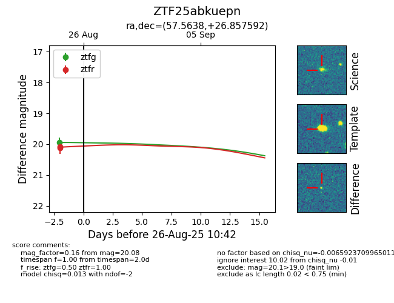

Target ZTF25abkuepn at 2025-08-26 11:20, see:
FINK: fink-portal.org/ZTF25abkuepn
Lasair: lasair-ztf.lsst.ac.uk/objects/ZTF25abkuepn
ALeRCE: alerce.online/object/ZTF25abkuepn
alt names
ZTF25abkuepn (ztf,fink)
coordinates:
equatorial (ra, dec) = (57.5638,+26.85759)
galactic (l, b) = (165.1694,-20.99713)
photometry
last ztfg=19.94, ztfr=20.08
1 ztfg, 2 ztfr detections
